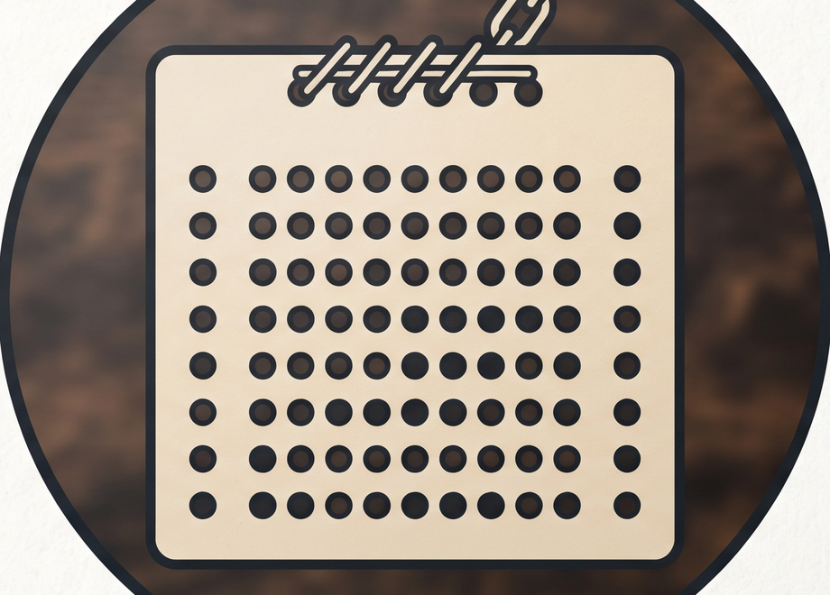
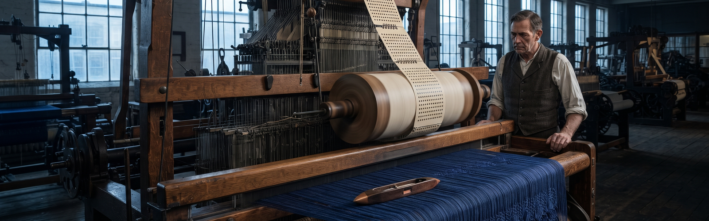
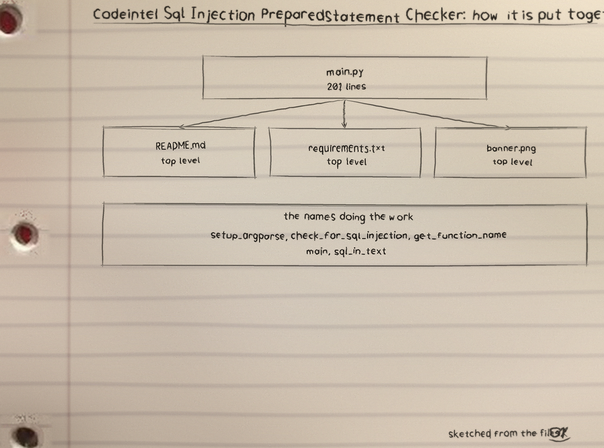
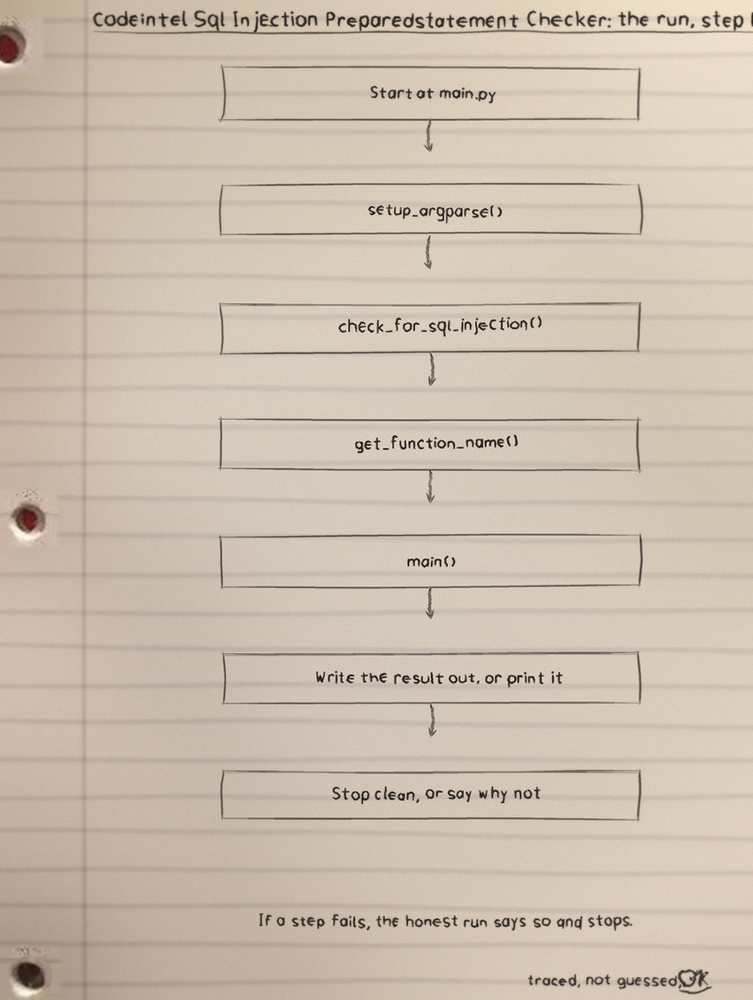
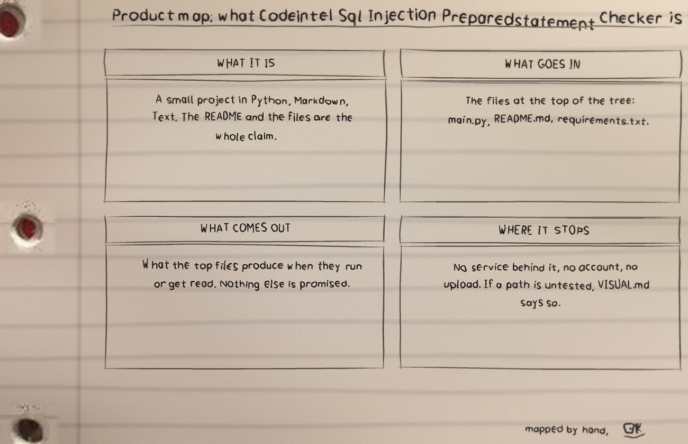

This tool parses one Python file into a syntax tree and reports the places where SQL text is built by joining instead of passed as a prepared statement. Run it as python3 main.py FILEPATH; the positional names one Python file. Options: --ignore taking function and method names to skip, and --log-level with five permitted values and an INFO default.
A string counts as SQL when SELECT, INSERT, UPDATE or DELETE appears anywhere in its unparsed text at all, so a sentence in a comment-like string that merely says delete is enough, which is why every finding is labelled potential only.
The four build forms are unevenly covered: assignment lines are checked for the plus build and the f-string build only, while call arguments are checked for all four (plus, percent, f-string, and the .format call), so the README's wider sentence claiming all four forms are checked in both places overstates the code. The ignore test compares only the last part of a call's name, so ignoring execute ignores every object's execute method alike. A file that cannot be read or parsed returns a distinct no result and exits 1, never printing the clean line; a parsed file with findings prints them and returns normally, and a clean parsed file prints that none were found, so findings and clean files both exit 0 and the printed list is the verdict a caller has to read.
Recorded traps, preserved in the README: the clone URL names the stale ShadowStrikeHQ org; the usage line is a placeholder naming no file path; the parameter list omits the required positional filepath, leaves --log-level undescribed, and its --ignore entry breaks off mid example; and the closing licence line reads Copyright (c) ShadowStrikeHQ while the LICENSE file is MIT.

Diagrams


